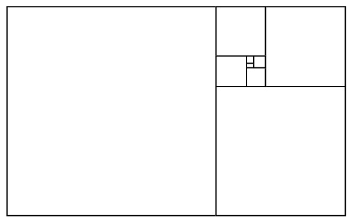

The golden ratio appears in my research on infinite staircases.
Upcoming/Ongoing
- May 2024: co-organizing the Cornell Topology Festival.
- Fall 2023: co-organizing the Cornell Topology Seminar.
- I am a postdoc organizer of the Math Explorer's Club at Cornell University.
- I have a YouTube channel. Mostly teaching videos, with plans for expansion...
Past
- May 2023: co-organized the Cornell Topology Festival.
- Spring 2023: co-organized the Cornell Topology Seminar.
- In June 2022 I will be mentoring the graduate student Kylerec workshop on quantitative symplectic geometry. I actually co-organized the inaugural instance of this series of workshops in 2016!
- Slides for a Zoom talk I gave called "Continued Fractions and Square Packings" at the Lanier Middle School Math Club on 2/10/21. This talk involves some of the basics of my research on symplectic embeddings of ellipsoids!
- The Math Mentorship Program for Freshmen at Rice University.
- Horizons colloquium series at Rice University.
- AMS-AWM Special Session on Women in Symplectic and Contact Geometry at the 2020 JMM, with Catherine Cannizzo and Melissa Zhang.
- New Advances in Symplectic and Contact Topology at the AWM 2019 Research Symposium, with Jo Nelson.
- Berkeley Connect Math 2015-2016.